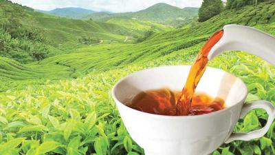
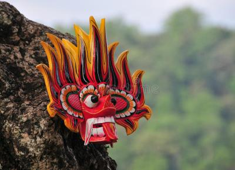
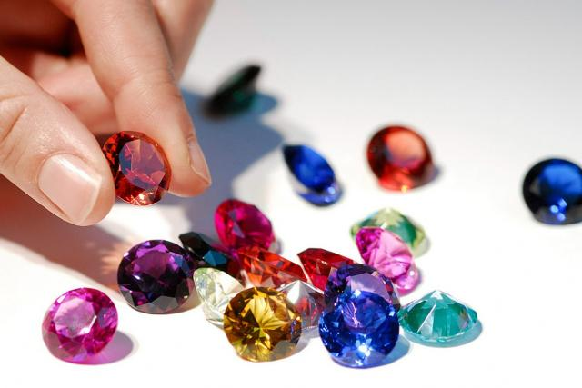
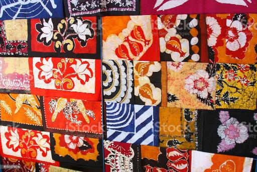
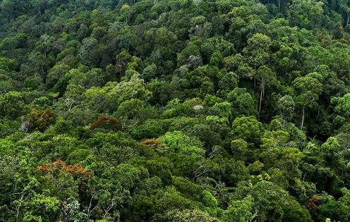
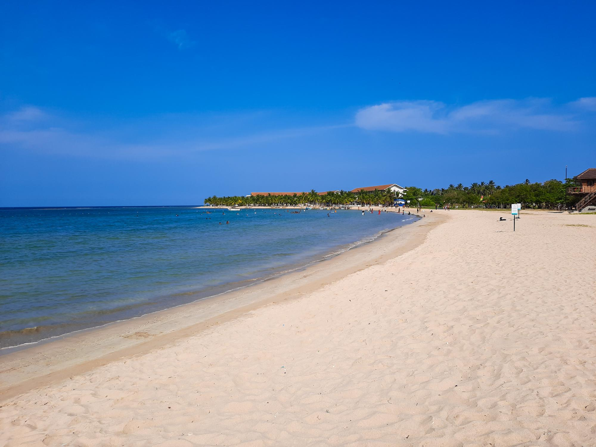

If you are visiting Sri Lanka, don't forget to buy some suveniours to make your journey a memorable one.This is a list of some most common and most popular items that people buy at their visit to Sri Lanka.
If you are visiting Sri Lanka, don't forget to buy some suveniours to make your journey a memorable one.This is a list of some most common and most popular items that people buy at their visit to Sri Lanka.
--------------------------------------------------------------------------------------------------------------------------------------------------

Sri Lanka is one of the most famous countries to produce tea and is one of the most fabulously enjoyed beverages in Sri Lanka. Tea for us is literally second to water, every single person in our Nation enjoys at least three cups a day, and that is just minimally. Every occasion is celebrated with a cup of tea, and we would not substitute it for anything else. Its the poor mans’ drink of choice and the rich mans’ as well. There is something about the wonderful beverage that leaves you wanting for more. The unique tastes and the impeccable aromas of Ceylon Tea is what makes it famous around the globe.
Sri Lanka (then called Ceylon) was introduced to Tea in the 1800’s by James Taylor, he began a tea plantation in Kandy and started manufacturing tea. He made his first sale in kandy and thus began the growth of the tea industry in Sri Lanka.
The ideal climatic conditions play a major role in the success of the growth of tea in Sri Lanka. 4% of the country’s land is covered by tea plantations. The main tea growing areas are Nuwera Eliya, Kandy, Central Province, , Bandarawela, Haputale, Uva Province, Galle, Matara, Southern Province, Ratnapura, Kegalle, Sabaragamuwa Province. The best tea are gathered from late June to the end of August in the eastern districts and fron the beginning of February to mid March in western districts.

The important aspect of Sri Lankan folklore and a vivid part of the island’s cultural identity. Local craftsmen in this coastal town use their deft hands to breathe life into a plain log and create exotic masks with intricate features. Popular devil masks, which were once only seen in folk dances, have now evolved into magnificent works of art. The are hand-carved wooden masks which were once used to fend off evil but are now only used to embellish traditional rituals and dances.

While there are 200 types of mineral found across the world, Sri Lanka is home to nearly 75 varieties of coloured and colourless gemstones belonging to ten main species. Ruby,Spinel,Amethyst,Sapphire,Garnet are some of the most valueble and popular ones.Most of gem mines are located in Rathnapura and Kegalle districts.there are gems in different sizes,and the prices can vary from about 20$ to thousands of dollars, with the changes of species and sizes.

Originated as a primary art of fabric dying, Batik has evolved into a vibrant industry of fabric art in Sri Lanka with their own identity, methodology and design.
In its purest form batik is a method of decorating a piece of cloth by creating pattern on it with wax and colouring rest of the piece of cloth, creating a vibrant mosaic with coloured and uncoloured areas. Painstaking and time consuming, Batik was originally a hobby of the elitists in Kandyan court. The aristocratic ladies of the central kingdom were skilled practitioners of batik and soon the skills of batik were introduced to the artesian classes, who developed tapestry, regional flags and traditional clothes of the aristocrats with batik fabrics.
Other than the ones mentioned, there are plenty of stuff that you can buy in Sri Lanka.You can refer laksala and order your interets to any part of the globe.
Most popular place for buying suveniours is Galle Fort, because you can find some rare antiques that runs up to Dutch era, for a cheap price. But in any part of the country, you can collect the suveniour of your need.
We kindly expect your help to achieve the common goals of protecting environment and ocien.Deforestation is a major crisis in Sri Lanka, and also dumping the ocien. Thease are some major reasons that animals and plants both in ocien and sea goes extinct.

